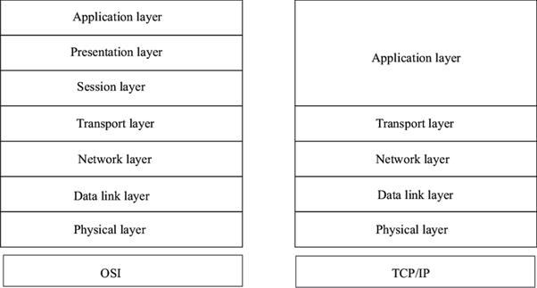
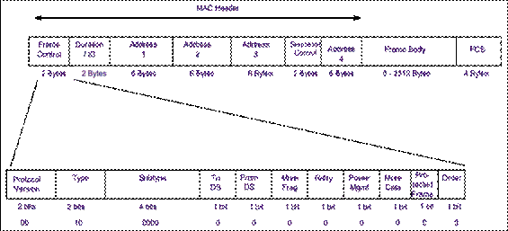
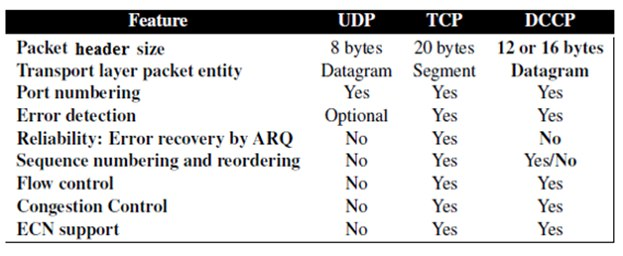
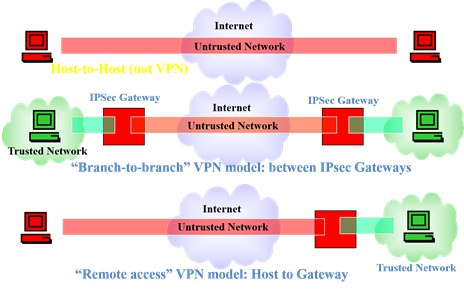
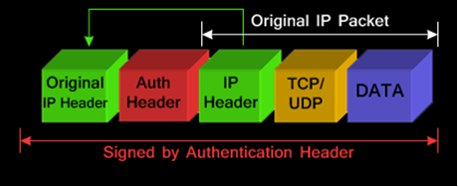

Chapter 1 – Computer Networks
An interconnected collection of autonomous computers able to exchange information.
Circuit: It is a physical channel that is dedicated to one communication through the communication. Mostly used in non-data communication. Inefficient in data communication, Data usually has Burst nature. Packet: Breaking the communication down into packets. Destination address contained within each packet, plus some other redundancies. The same physical channel can be shared among many nodes in a network. Each packet can take a different route to its destination (connectionless). Packets of one session may be unordered. Packets can have redundancies such as packet numbers. Multiple Access Techniques which are used to provide communication service to multiple users over a single channel simultaneously.
A part of a computer network which interconnects networks, providing paths for data communication between different LANs or sub networks. That contains Switches and Routers.
Each computer-based part in Edge or Core is called a Node
Unicast: one node (address) at each end.
Multicast: one sending node; more than one receiving nodes (addresses).
Broadcast: one sending node; to all nodes of a sub-network
Distributed Systems: Users are unaware of underlying structure. The operating system automatically allocates jobs to processors, moves files among various computers without explicit user intervention. Multiple Devices Cooperating on some task. Network: An interconnected collection of autonomous computers able to exchange information. Usually require users to explicitly login onto one machine, explicitly submit jobs remotely, explicitly move files/data around the network.
n=2020
needs n(n-1)/2 links
Multiple access means many can access at one time, one sends many receive but only one is the desired receiver (if unicast), such as Ethernet.
Multiplexing is a process to combine multiple signals for transmitting it (the combined) over a single channel or media. Generally multiplexing combines several lower-speed signals for transmission over a single higher-speed connection. One sends, different data, one receives, different data. ADSL uses a type of Multiplexing to separate data and voice.
There are similarities but Multiple access means many can access at one time, one sends many receive but only one is the desired receiver (if unicast), such as Ethernet. Multiplexing is a process to combine multiple signals for transmitting it (the combined) over a single channel or media. Generally multiplexing combines several lower-speed signals for transmission over a single higher-speed connection. One sends, different data, one receives, different data. ADSL uses a type of Multiplexing to separate data and voice. Multiplexing: There is no possibility that two transmitted channels will damage each other’s data. Multiple access: if not just between two points, there is always the possibility of collision between the sender’s data.
Multiplexing: a method by which multiple analog or digital signals are combined into one signal over a shared medium.
Multiple access: allows several terminals connected to the same transmission medium to transmit over a shared medium.
Multiplexing: There is no possibility that two transmitted channels will damage each other’s data.
Multiple access: if not just between two points, there is always the possibility of collision between the senders data.
multiple access techniques can be used on multiplexed channels.
Packet switching on WDM channels.
Simplify communication.
Level abstraction in complicated tasks(network programming).
Divide and Conquer in complex systems (computer network).
Breaking up the sending messages into separate components and activities. Each component handles a different part of the communication.
- OSI model is a generic model that is based upon functionalities of each layer. TCP/IP model is a protocol-oriented standard.
- OSI model distinguishes the three concepts, namely, services, interfaces, and protocols. TCP/IP does not have a clear distinction between these three.
- OSI model gives guidelines on how communication needs to be done, while TCP/IP protocols layout standards on which the Internet was developed. So, TCP/IP is a more practical model.
- In OSI, the model was developed first and then the protocols in each layer were developed. In the TCP/IP suite, the protocols were developed first and then the model was developed.
- The OSI has seven layers while the TCP/IP has four layers.

Frequency Hopping Spread Spectrum (FHSS) FHSS is a method of transmitting radio signals by rapidly changing the carrier frequency among many distinct frequencies occupying a large spectral band. The changes are controlled by a code known to both transmitter and receiver. FHSS is used to avoid interference, to prevent eavesdropping, and to enable code-division multiple access (CDMA) communications. The available frequency band is divided into smaller sub-bands. Signals rapidly change ("hop") their carrier frequencies among the center frequencies of these sub-bands in a predetermined order. Interference at a specific frequency will only affect the signal during a short interval. Direct-Sequence Spread Spectrum (DSSS) In telecommunications, direct-sequence spread spectrum (DSSS) is a spread spectrum modulation technique primarily used to reduce overall signal interference. The direct-sequence modulation makes the transmitted signal wider in bandwidth than the information bandwidth. After the dispreading or removal of the direct-sequence modulation in the receiver, the information bandwidth is restored, while the unintentional and intentional interference is substantially reduced. Orthogonal Frequency-Division Multiplexing (OFDM) In telecommunications, orthogonal frequency-division multiplexing (OFDM) is a type of digital transmission and a method of encoding digital data on multiple carrier frequencies. OFDM has developed into a popular scheme for wideband digital communication, used in applications such as digital television and audio broadcasting, DSL internet access, wireless networks, power line networks, and 4G/5G mobile communications.
A 48-bit Address, such as D0-59-5C-03-8A-00.
MAC Add. is unique (in World), for each NIC.
Most significant Bit: 0: Unicast, 1: Multicast; the next bit: 0:External (LAN) Add., 1:Local (LAN)Add.
FF-FF-FF-FF-FF-FF is Broadcast Add (in this LAN). Frames with this address are reached to every NIC and received by that computer, on a given LAN.
Multiple Access with Collision Avoidance (MACA); IEEE 802.11 RTS/CTS
A transmitting station sends a RTS frame to the receiving station. The receiving station replies by sending a CTS frame. On receipt of the CTS frame, the transmitting station begins transmission.
Any station hearing the RTS is close to the transmitting station and remains silent long enough for the CTS.
Any station hearing the CTS is close to the receiving station and remains silent for a specified time indicated in RTS/CTS frames.
In simplex mode, the signal is sent in one direction. In half duplex mode, the signal is sent in both directions, but one at a time. In full duplex mode, the signal is sent in both directions at the same time. In simplex mode, only one device can transmit the signal. Advantages of Half-Duplex Mode It is easy to implement. There is a need for less complicated hardware. There is a less congested network in this mode of transmission. We can make use of only one antenna which can be used as both the receiver and the sender. Disadvantage of half-duplex The speed of half-duplex is less as compared to the full-duplex mode of transmission. Advantages of Full-Duplex Mode There is an increase in the performance of the network in this mode. The speed of transmitting and receiving the data is faster in this mode. It doubles the utilization of the bandwidth. Identifying the problem is easy in full-duplex transmission mode.
Disadvantages of full-duplex Mode All network equipment does not support a full-duplex system. It is expensive when we want to upgrade our system to full-duplex. Sometimes it may cause instability. Due to this, it may become difficult for the administrators to diagnose the issue in the network.

More complicated encryption , more secure.Three types: Data, Control and Management. The bits Type and subtype in Frame Control byte determine the type of the frame.
Most important and practical Multicast. Routers actively participate in multicast, making copies of packets as needed and forwarding towards multicast receivers. Routers actively participate in multicast, making copies of packets as needed and forwarding towards multicast receivers. Layer 3 Multicast. Less BW and larger groups
Datagram must be fragmented to the new datagrams equal to the smallest MTU of the lower layer of nodes (networks)it needs to pass to reach the destination. In destination, the data in fields Ident, Flags and Offset are used to reassemble the main datagram. Datagrams are not fragmented in IPv6. Internet protocol mandates that all nodes must support datagrams with length 1280, otherwise they must fragment their frames. Internet Protocol mandates that all nodes must support datagrams with the length 576 and 1280, in IPv4, and IPv6 respectively, otherwise they must fragment their frames.
Two modes: Secure and Open(without security)
Security Types: WEP(oldest), WPA, WPA2, WPA3.
IP is connectionless protocol (Complete address on each packet; Datagram).
Each Datagram (packet) contains the origin and destination Addresses.
The address is used to decide the next hop at each routing point.
Multiple Access with Collision Avoidance (MACA) IEEE 802.11 RTS/CTS A transmitting station sends a RTS frame to the receiving station. The receiving station replies by sending a CTS frame. On receipt of the CTS frame, the transmitting station begins transmission. Any station hearing the RTS is close to the transmitting station and remains silent long enough for the CTS. Any station hearing the CTS is close to the receiving station and remains silent for a specified time indicated in RTS/CTS frames.
Datagram must be fragmented to the new datagrams equal to the smallest MTU of the lower layer of the nodes (networks) it needs to pass to reach to the destination.
In destination , the data in fields Ident, Flags and Offset are used to Reassemble the main datagram.
Internet protocol mandates that all nodes must support datagrams with length 576, otherwise they must fragment their frames.
Datagrams are not fragmented in IPv6 .Internet protocol mandates that all nodes must support datagrams with length 1280, otherwise they must fragment their frames.
When one of the application programs in one host uses RRP (Request/reply protocol) to send a message to its peer (another host). From RRP’s perspective, the message it is given by the application is an uninterpreted string of bytes. Actually, RRP does not care that these bytes represent an array or email or a digital message, or whatever. However, RPR must communicate control information to its peer, instructing it how to handle the message when it is received. RRP does this by attaching a header to the message. In fact, a header is a small data structure- from a few bytes to a few dozen byte that is used among peers to communicate with each other
a) Four layer
b) Five layer
c) Six layer
d) Seven layer
CIDR abandons the notion of classes.
Key Concept: The length of the network id (prefix, m) in the IP addresses is kept arbitrary.
Consequence: Routers advertise the IP address and the length of the prefix, m.
w.x.y.z/m
Backbone ISPs obtain a large block of IP addresses space and then reallocate portions of their address blocks to their customers.
Example: Assume that an ISP owns the address block 206.0.64.0/18, which represents 16,384 (2 (32-18) ) IP addresses for sub-nets and hosts. Mask = 255.255.192.0
Suppose a client requires a sub-net with 800 host addresses.
CIDR: Assign a /22 block, e.g., 206.0.68.0/22,〖(one Address From 206.0.64.0/22 to 206.0.124.0/22)〗^1 and allocate a block of 1,024 (2^10) IP addresses.e.g:〖206〗_D.0_D01000100〗_b.0_D to 〖206〗_D.0_(D.) 〖01000111〗_b.〖255〗_D ;(1024-800 addresses are reserved for this client).
From 〖206〗_(D ).0_D.〖01000000〗_b.0_(D ) to 〖206〗_D.0_D.〖01111100〗_b.0_D
These addresses are reserved as Private IP addresses. These IPs can be used within a network, campus, company and are private to it. These IP addresses must be translated to some public IP addresses using NAT process, or Web Proxy server can be used.
To overcome public(routable) IPAddresses shortage. It is more secure than the use of a public IP address, private IP addresses are not directly visible on the Internet (they are behind NAT).
Amount of time it takes for a packet to be sent plus the amount of time it takes for an acknowledgement of that packet to be received. Packet loss increments RTT. The ping utility is a method of estimating round-trip time. pings to Google with the round-trip time statistics at the bottom.
Chapter2 – Internet Multicasting
Unicast: just one sender and one receiver (1:1)
Multicast: just one sender and multiple receivers (1:n)
Broadcast: just one sender and All receivers in a subnet(1:n)
Anycast: just one sender and one receiver from a group(1:1 out of m)
Teleconferencing (audio, video, shared whiteboard, text editor)
Distributed interactive gaming or simulations
Email distribution lists
Flood, Prune
Unicast: this type of information transfer is useful when there is a participation of single sender and single recipient. So, we can term it as a one-to-one transmission: for example, a device having IP address 10.1.2.0 in a network wants to send the traffic stream (data packets) to the device with IP address 20.12.4.2 in the other network, then unicast comes into the picture. Broadcast: the term broadcast refers to one-to-all. Actually, in broadcast routing, the network layer provides a service of delivering a packet sent from a source node to all other nodes in the network, for example, ipv4 address 255.255.255.255 is used as broadcast address. Multicast: the term multicast refers to “one-to-selected group of members” Actually, multicast routing enables a single source node to send a copy of a packet to a subset of the other network nodes. For example: protocols such as IGMP, MPLS use the multicast transmission concept. Anycast addressing: it is a one-to-one-of-many association where datagram is routed to any single member of a group of potential receivers from the group based on least-expensive routing metric. In practice, this means that packets are routed to the topologically-nearest member of an anycast group.
two modes; PIM Dense Mode (PIM-DM) and PIM Sparse Mode
Multicast routing: a networking method for efficient distribution of one-to-many traffic. The goal of multicast routing is to find an efficient tree of links, before Multicast data forwarding, connects all of the routers that have attached hosts belonging to the multicast group. The tree may contain routers that do not have attached hosts belonging to the multicast group. Methods: Graph Theory Shortest Path Tree or Source-Based Tree Minimum-Cost Tree Source Base Trees and Core Base Trees.
4- Reverse Forwarding: all the routers which have non-optimum (non-accepted) ports, send back the accepted packets through non- accepted ports to the source (core).
5- Routers which receive these reverse packets, learn that the related port must be deleted from the optimum tree for that multicast group, it is pruning the tree or deleting that ports from their Multicast routing tables.
IGMPv2 Membership Reports are generated by IGMPv2 hosts when they first join a multicast group, and are sent in response to IGMPv2 Membership Queries. When an IGMPv2 host first joins a multicast group (such as when a multicast application is started on the host), it issues a couple of IGMPv2 Membership Reports, allowing for the possibility that the first one was lost or corrupted. After that, IGMPv2 Membership Reports are not sent unless a multicast router has issued an IGMPv2 Membership Query. Typically, an IGMPv2 host will only respond to a Membership Query with an IGMPv2 Membership Report when it can tell for certain that an IGMPv2 multicast router is on the network. This is determined by examining the Maximum Response Time field in a Membership Query. If the field is not blank, then the sender is probably an IGMPv2 multicast router. Not all hosts will respond to Membership Queries. If another host responds for a multicast group that this host is also participating in, then this host can abort the response for that group.
A host joins the group by requesting. It sends a join message, using the Internet Group Management Protocol (IGMP), to its first-hop router, in its LAN. Host to/from router. Is a simple communications protocol used by hosts in LANs and adjacent routers (Local Multicast Router) on IPv4 networks to establish multicast group memberships. IGMP is an integral part of IP multicast. Allows the network to direct multicast transmissions only to hosts that have requested them. LAN switches must support IGMP. IGMP is a layer 3 protocol for IP Multicast. The Domain is a LAN and the Local Multicast Router. IGMP is not used out of LANs.
a) high Bandwidth
b) high Bit Rate
c) Non of a and b
d) a and b
42. Explain source Based Tree in a multicast routing along with its drawbacks and privileges?
In a source-based approach, an individual routing tree is constructed for each sender in the multicast group. In a multicast group with N hosts, N different routing trees will be constructed for that single multicast group. In this method, packets will be routed to multicast group members in a source specific manner. One advantage of this method is that if one multicast router leaves the tree (Group), there is no further cost to construct a new tree. Also, it is modular. The drawback is that it uses one tree for every sender and group and also it is not scalable. \
43. Host to/from router, Is a simple communications protocol used by hosts in LANs and adjacent routers (Local Multicast Router) on IPv4 networks to establish multicast group memberships, Is an integral part of IP multicast and allows the network to direct multicast transmissions only to hosts that have requested them is feature of …………………… .
Internet Group Management Protocol (IGMP).
44. What do querier and forwarder each mean?
Querier: the smallest IP address router. Forwarder: Usually the biggest IP address router. It is a data Multicast router.
45. Expound IGMP Operation with the diagram.
page 75 to page 77.
46. Explain the concept of (PIM protocol) along with its variant?
PIM is abbreviation of protocol-independent multicast which is the most widely used internet multicast routing protocol. This protocol explicitly recognizes two multicast distribution scenarios. The first one is dense mode. In dense mode, multicast group members are densely located, that is, many or most of the routers in the area need to be involved in routing multicast datagrams. PIM dense mode is a flood-and-prune reverse path forwarding technique similar in spirit to DVMRP. The second one is Sparse mode In sparse mode, the number of routers with attached group members is small with respect to the total number of routers. In fact, group members are widely dispersed. PIM sparse mode uses rendezvous points to set up the multicast distribution tree. In PIM SM, routers explicitly join the multicast distribution tree using PIM protocol messages known as join messages. Also, we should consider that PIM SM assigns to each group a special router known as the rendezvous point. IN general, a number of routers in a domain are configured to be candidate RPs and PIM-SM defines a set of procedures by which all the routers in a domain can agree on the router to use on the RP for a given group.
47. How does an Anycast network mitigate a DDoS attack?
After other DDoS mitigation tools filter out some of the attack traffic, Anycast distributes the remaining attack traffic across multiple data centers, preventing any one location from becoming overwhelmed with requests. If the capacity of the Anycast network is greater than the attack traffic, the attack is effectively mitigated. In most DDoS attacks, many compromised "zombie" or “bot” computers are used to form what is known as a botnet. These machines can be scattered around the web and generate so much traffic that they can overwhelm a typical Unicast-connected machine. A properly Any casted CDN increases the surface area of the receiving network so that the unfiltered denial-of-service traffic from a distributed botnet will be absorbed by each of the CDN’s data centers. As a result, as a network continues to grow in size and capacity it becomes harder and harder to launch an effective DDoS against anyone using the CDN.
48. What is the goal of multicast routing?
The goal of multicast routing is to find an efficient tree of links, before Multicast data forwarding, that connects all of the routers that have attached hosts belonging to the multicast group.
49. Explain the idea of reverse path forwarding in multicast routing? When a router receives a multicast packet with a given source address, it transits the packet on all of its outgoing links only if the packet arrived on the link that is on its own shortest path back to the sender otherwise the router simply discards the incoming packet without forwarding it on any of its outgoing links. In fact, RPF will check the routing table and check which egress interface the router would use if it were to send traffic back to the multicast sender, if the interface matches the interface the multicast packet has just been received on, the packet is accepted, otherwise, it is dropped.
50. What is Multicast routing?
a networking method for efficient distribution of one-to-many traffic.
51. What options does a user have for selecting a multicast address?
Register with IANA for static multicast address (global), or use GLOP reserved Address (static, regional). Using GLOP reserved Address (static, regional), you can map directly between AS (Autonomous System) and Multicast addresses with prefix 233/8. Provides each AS with /24 addresses to use (Every AS can use just 256 Multicast addresses). E.G.: AS 5662 (hex: 0x16.1e; or: 22.30) can use multicast addresses 233.22.30.0/24- 233.22.30.255/24.
Chapter 3 - New Internet Transport Protocols
52. What is TCP congestion control?
There are some versions of TCP with a little different Congestion Control mechanism.
TCP Tahoe: the original version of TCP congestion control ; Slow Start, Congestion Avoidance and Fast Retransmit.
TCP Reno: the most popular version of TCP; Slow Start, Congestion Avoidance, Fast Retransmit and Fast Recovery (only one duplicate ACK, a packet loss without congestion, only resend that packet without changing mode)
53. What is the function of Advertised Window Size (AWS) and Transmit Window Size (TWS)?
AWS: Amount of data that the receiver will buffer. It is contained in the TCP header. From receiver 's side. TWS: the amount of unacknowledged data, i.e., data that TCP transmits in a burst without receiving any indication on what happened to the data. TWS[n] = min (AWS, CWND[n]); from now on we suppose TWS[n] = CWND[n]. In TCP, there is an ACK for every successfully sent packet.
54. ……………………………… a known method for increasing speed in computer engineering.
Segmentation and Parallelization
55. What is the main difference between two phases of slow-start and congestion avoidance in the concept of TCP congestion control?
The main difference is that in congestion avoidance mode in each RTT, the value of CWND[n] will be increased by just 1 unit while in slow start mode in each RTT, the value of CWND[n]will be Multiplied by 2. Another difference is that the increment in congestion avoidance is linear but another phase is exponential.
56. What is Parallel TCP, applications?
Applications like Internet Download Manager (IDM), Xunlei download manager and some P2P applications create multiple parallel HTTP connections for the same file to accelerate downloads.
57. What are the main reasons for using BIC TCP?
- WMAx is selected dynamically based on the traffic - The curve is flattened after incremental slop, and if no packet loss, or high traffic, again increases - Moreover, when the curve is flat, it gives others the chance for using the available bandwidth, also routers get chance to decrease their buffers.
58. What's BIC Control?
Binary Increase Congestion control One stream, like Single TCP, the differences are in flow control after loss, or at congestion avoidance.
59. What types of TCP congestion control?
There is some version of TCP with a little different Congestion Control mechanism. TCP Tahoe: the original version of TCP congestion control; Slow Start, Congestion Avoidance and Fast Retransmit. TCP Reno: the most popular version of TCP; Slow Start, Congestion Avoidance, Fast Retransmit and Fast Recovery (only one duplicate ACK, a packet loss without congestion, only resend that packet without changing mode).
60. Why BIC?
More fairness: wmax is selected dynamically based on the traffic.The curve is flattened after incremental slope, and if no packet loss, or high traffic, again increases.The flat part of the curve, gives others the chances for using the available Bandwidth, also routers get chances to decrease their buffers.
61. How can we handle multiple streaming by using SCTP protocol?
SCTP allows multiple simultaneous data streams:
- Within a connection or association. Each message sent to
- A data stream can have a different final
- Destination(application), but each must maintain message boundaries.
- Only the stream that is affected by Head-of-Line Blocking would be blocked; the other streams would continue to flow.
- Message: unit of data in application layer.
- Allows multiple simultaneous data streams within a connection or association. Each message sent to a data stream can have a different final destination, but each must maintain message boundaries.
- Bundling of multiple user messages into a single SCTP packet.
62. What is TCP CUBIC?
Like BIC but softer.The flat part of the curve, gives others the chances for using the available Bandwidth.Improves scalability and stability under fast and long-distance networks.The default algorithm of Linux Kernel 2.6.18.
63. What is Datagram Congestion Control Protocol (DCCP)?
Well suited to Multimedia, VoIP, Internet Gaming, etc. Multimedia streaming applications and online games often prefer timeliness over reliability. UDP is usually used, but: UDP is unfair, no feedback, no congestion control. Implementation of effective congestion control in application protocols is difficult. UDP flows are hard for firewalls to handle due to a lack of a setup and teardown exchange. DCCP in layer 4, Transport.
64. Explain CUBIC Control workflow:
if W(t) < WTCP(t), then CUBIC TCP operates in friendly mode, set the new cwnd(t) to the value of WTCP(t). else if cwnd(t) < Wmax, then it is in the concave region of the flatness mode. The new cwnd is adjusted according to W(t). At each ACK it is incremented by ( W(t) – cwnd(t) ) / cwnd(t) else, (or else if cwnd(t) > Wmax), then it is in the convex region of the flatness mode. The window is adjusted according to W(t). At each ACK , incremented by ( W(t) – cwnd(t) ) / cwnd(t).
65. Segmentation and Parallelization What do they mean by parallel TCP?
known method for increasing speed in computer engineering. Uses a set of parallel (modified or standard) TCP connections to transfer data. Effectively utilize bandwidth for applications that require substantial amounts of network bandwidth.
66. What is SCTP Protocol?
Stream Control Transmission Protocol.
Transport Layer, 4, Protocol.
Multi-stream, protocol.
67. What is the difference between single TCP and Parallel TCP?
Parallel transport control protocol (TCP) has been used to effectively utilize bandwidth for data intensive applications over high bandwidth-delay product (BDP) networks. On the other hand, it has been argued that a single based TCP connection with proper modification such as HSTCP can emulate and capture the robustness of parallel TCP and can well replace it. The experiment results show that single-based TCP cannot overcome parallel TCP especially in heterogeneous networks where the packet losses are common. Furthermore, the proposed parallel TCP does not affect TCP fairness which makes parallel TCP highly recommended to effectively utilize bandwidth for data intensive applications.
68. What are SCTP features?
Ordered and unordered delivery of data.Message oriented (preserves application layer framing).Port number: like TCP
69. What is the main difference between TCP and DDP when a packet is lost?
The reliability in TCP is complete. It means that, in the case of each packet lost, that packet will be transmitted again or will be transmitted. But in DCCP, if there is any packet lost, that packet will not be transmitted, but indirectly, DCCP, in the case of any congestion, understands congestion by using ECN and so decreasing the transmition rate in order to decrease the probability of packet loss.
70. What are SCTP Packets?
A segment (packet) in TCP and a packet in SCTP.An association may send many packets. A packet may contain several chunks, control and data.Data chunks may belong to different streams.Messages are encapsulated in data chunks. A stream in a packet, can have no data chunk (just control chunks) or can have some data chunks.
71. Explain about the congestion window.
In TCP, the congestion window is one of the factors that determines the number of bytes that can be sent out at any time. The congestion window is maintained by the sender and is a means of stopping a link between the sender and the receiver from becoming overloaded with too much traffic. This should not to be confused with the sliding window maintained by the sender which exists to prevent the receiver from becoming overloaded. The congestion window is calculated by estimating how much congestion there is on the link.
When a connection is set up, the congestion window, a value maintained independently at each host, is set to a small multiple of the MSS allowed on that connection. Further variance in the congestion window is dictated by an additive increase/multiplicative decrease (AIMD) approach. This means that if all segments are received and the acknowledgments reach the sender on time, some constant is added to the window size. When the window reaches ssthresh, the congestion window increases linearly at the rate of 1/ (congestion window) segment on each new acknowledgement received. The window keeps growing until a timeout occurs. On timeout:
- Congestion window is reset to 1 MSS.
- ssthresh is set to half the congestion window size before the timeout.
- Slow start is initiated.
A system administrator may adjust the maximum window size limit, or adjust the constant added during additive increase, as part of TCP tuning. The flow of data over a TCP connection is also controlled by the use of the receive window advertised by the receiver. By comparing its own congestion window with the receive window, a sender can determine how much data it may send at any given time.
72. What's different between main features DCCP, TCP, UDP? (Compare)

Chapter 4 - Internet Quality of Service (QoS)
73. What is IntServe?
Each flow has a fixed or stable path. Is established by RSVP. In unicast is the unicast route, not the best path, but meets requirements. In multicast is the multicast route. Routers along the path maintain state for the flow.
74. What are elastic and inelastic applications?
Elastic: Can tolerate changes in delay, jitter, and throughput. Traditional type of traffic on the Internet. • Examples: E-mail, file transfers, Web Browsing. Inelastic applications (Traffics): Cannot easily tolerate, if at all, changes in delay, jitter, and throughput. Examples: Video and audio streams, Realtime stock trading.
75. What are the RSVP messages?
Sender: sends PATH, carrying Tspec for receiver, following the same unicast or multicast route as the data packets. Set up the path state for each router including the address of the previous hop.
Receiver: In response sends RESV. Based on Tspec, sends Rspec which Specifies the reservation style. Set up the reservation state(style) at each router. RESV follows exactly the reverse route of the data packets using the path state created by the PATH messages
Error Messages: PathErr (PATH Error) and ResvErr (RESV Error), These messages are used in the event of unavailability of the requested resource.
Tear Messages: PathTear and ResvTear, These messages are used to clear the PATH or RESV states from the network.
76. What is the Best Effort service and QoS?
Best Effort service: Most traffic on the Internet All users obtain best-effort service. No guarantee of delay, throughput and jitter. Dedicating resources randomly and uniformly. All users have the same class. All users have the equal chances for resources. Lack of resources causes packet loss to all users with equal chances. The pre-defined state of core nodes, and switches. QoS: Adjustable on core nodes and switches. Implementation in layers 3 (IP) and 2 (Ethernet). Supported by IPv4 and IPv6. Different policies for different flows. Ranking (grading) or classifying different flows in layer 3 (or 2). Classified packets, no further fragmentation.
77. Explain IntServ Admission control:
In RSVP Determines whether to accept a request.Per-flow decision to admit or reject a new flow.Admission control looks at TSpec and RSpec and decides if a desired service can be provided to that amount of traffic.If yes, accept the flow, if not reject the QoS for that flow.
78. What are the prerequisites of IntServe or Integrated Services?
Call Setup: Flows that need, and are allowed, QoS, demand for resources (Buffers and Link BW) reservation from routers and switches. Reserved Resources: Each router which can support the required resources added to explicit routes.
79. What is Tspec & Rspec?
Traffic Specification, Reserved Specification.
Tspec from sender application by PATH.
Rspec from receiver application by RESV.
In Qos they are parameters for Queue Management and Scheduling.
80. Explain reservation Application layer protocol (RSVP) and what types are there and when RSVP is treated?
In layer 3 (routers) or 2 (switches). Before, and during, the connection a reservation Application layer protocol (RSVP) defines an End-to-End path, if possible. Queuing and Scheduling based on resources reserved by RSVP. Two types. Defined by the application (in RSVP). Guaranteed Service and Controlled load Service. Each flow (sender-receiver) reserves resources separately. A resource reservation setup protocol that is used by both network hosts and routers, sender ↔ receiver. RSVP treats an application flow (main data) as a simplex connection. Main data travels only in one direction from the sender to the receiver.
81. What are Leaky Bucket features?
The input rate can vary (e.g. burst).
The output rate remains constant,r.
Token independent.
If the bucket is full, the packet is discarded.
Packets are transmitted continuously.
Sends the packets at a constant rate.
Does not save tokens.
Tokens are real input traffic bytes.
82. Explain about Tspec and Rspec.
- Traffic Specification, Reserved Specification.
- Tspec from sender application by PATH.
- Rspec from receiver application by RESV.
- In QoS they are parameters for Queue Management and Scheduling. Token bucket specification (TSpec)
r: Token rate Bytes of IP datagrams per second (1 bytes per second to 40 terabytes per second)
b: Bucket depth Bytes (1 byte to 250 gigabytes)
p: Peak traffic rate Bytes of IP datagrams per second (1 byte per second to 40 terabytes per second)
m: Minimum policed. All IP datagrams of size less than m will be considered with size m. Unit Bytes
M: Maximum packet size; Flows requesting M greater than the link MTU must be rejected. Unit Bytes
Resource specification (RSpec)– for guaranteed service
R: Required service rate Greater than or equal to token rate, it is minimum output rate; R < out. rate < =p
S: Slack term, unit ms Difference between desired delay and the delay obtained using the required service rate
83. Why IntServ models?
Guaranteed Service.
Controlled Load Service.
Each model needs Admission control Policing and Scheduling.
84. What are Error Messages and Tear Messages?
Error Messages: PathErr (PATH Error) and ResvErr (RESV Error), These messages are used in the event of unavailability of the requested resource. Tear Messages: PathTear and ResvTear, these messages are used to clear the PATH or RESV states from the network.
85. What are IntServ constraints?
Is not scalable;
Especially at Backbone routers.
The more flows with QoS requests, the more problems.
Set up and maintain per-flow state information.
Periodically PATH and RESV messages overhead.
Consider the worst case: all users request QoS.
86. What are the features of Leaky Bucket?
The input rate can vary The output rate remains constant and it is equal to r 20 It is token independent. It means that r is independent from input. If the bucket is full, the packet is discarded. Packets are transmitted continually. Sends the packets at constant rate It doesn’t save tokens also consider that tokens are real input traffic bytes
87. Explain DiffServe or Differentiated Services:
Tries to be both scalable and flexible
Aggregation of flows; reservations for a group of flows, not per flow.
Two sets of functional elements:
Edge functions: packet classification and traffic conditioning.
Core function: packet forwarding.
Ingress routers (Edge routers):
Uses the type of service field (IPv4) or the traffic class field (IPv6) to classify and to set bits DSCP in packet header
Police/Shape traffic.
Subsequent routers (cores) treat the packets according to the DSCP.
Core routers:
Process packets based on DSCP.
A DSCP marked packet is forwarded according to a per-hop behavior (PHB).
The PHB should be based on the DSCP only. Simple forwarding, no need for QoS states for each source-destination pair (vs IntServ).
packets with same DSCP are treated equally, regardless of source or destination (traffic aggregating)
88. Define the concept of scheduling and what are its methods?
Fair Queuing
Used for Best Effort, not for QoS.
One Queue for each flow’s packets.
Flows without privilege (superiority).
Round Robin scheduling; handling all flows without priority (also known as cyclic executive). Packet oriented.
Flows with larger packets use more BW
Weighted Fair Queuing
One Queue for each flow’s packets.
Flows with privilege (superiority).
Round Robin scheduling; handling all flows, but with priority. Higher class or rank, takes more BW Also called Weighted Round Robin.
89. Explain DSCP, Differentiated Service Code Point:
Class assigning.
In each packet.
A 6-bit code.
In IPv4, 6 bits of TOS byte.
In IPv6, 6 bits of Traffic Class.
Ipv4 packet, DSCP bits.
2^6 = 64 classes, only
90. What is Guaranteed Service?
Firm bound on data throughput and delay Every element along the path must provide delay bound Is not always implementable, e.g., Ethernet Delay jitter or average delay not guaranteed or minimized Queue management is leaky-bucket, based on r and b of Tspec Scheduling is Weighted Fair queuing based on R of Rspec
91. What is IEEE 802.1p?
QoS on layer 2, LANs and LANs’ switches.
Because BW is usually sufficient on LANs, QoS is not an important problem on LANs.
This protocol can define a type of QoS with just 8 different classes. Only 3 bits in Ethernet packets (frame). Classes from DiffServ or IntServe undergo overlap here.
92. What is DiffServe and its functional elements?
DiffServe Tries to be both scalable and flexible Aggregation of flows; reservations for a group of flows, not per flow. Functional elements: Edge functions: packet classification and traffic conditioning. Core function: packet forwarding. Ingress routers (Edge routers) Uses the type of service field (IPv4) or the traffic class field (IPv6) to classify and to set bits DSCP in packet header Police/Shape traffic. Subsequent routers (cores) treat the packets according to the DSCP. Core routers Process packets based on DSCP. A DSCP marked packet is forwarded according to a per-hop behavior (PHB). The PHB should be based on the DSCP only. Simple forwarding, no need for QoS states for each source-destination pair (vs IntServ). packets with same DSCP are treated equally, regardless of source or destination (traffic aggregating)
Chapter 5 – Network Security
93. Explain Types of Security.
Computer Security: generic name for the collection of tools designed to protect data and to thwart hackers.
Network Security: measures to protect data during their transmission.
Internet Security: measures to protect data during their transmission over a collection of interconnected networks.
94. Explain the concept of Network Security.
A broad term that covers a multitude of technologies, devices and processes. A set of rules and configurations designed to protect the integrity, confidentiality and accessibility of computer networks and data. Includes both hardware and software technologies. Protect networking infrastructure from unauthorized access, misuse, malfunction, modification, destruction or improper disclosure. Protect networking infrastructure from unauthorized access, misuse, malfunction, modification, destruction or improper disclosure.
95. List 5 Security Threats.
Operating System (OS) attacks
Remote Access
Virus Attacks.
96. Define who is a computer hacker and who is cracker.
A hacker is a computer expert. Good behavior and/or bad behavior. Legal and/or illegal. Especially they search the Internet to find security holes, then make a solution (patch) for them or abuse them. cracker Not a computer expert. Bad behavior. Uses readymade tools. Tries to find Usernames and Passwords.
97. Not a computer expert, Bad behavior, Uses ready made tools,Tries to find Usernames and Passwords is:
a)Hacker
b)Cracker
c)DoS Attacks
d)Virus Attacks
98. What is a denial of service attack (DoS attack)?
Attempt to make a machine or network resource unavailable to its intended users Purpose is to temporarily or indefinitely interrupt or suspend services of a host connected to the Internet.
99. What is the difference between WEP and WPA in Encryption?
WEP:RC4 , WPA:TKIP with RC4.
100. What are the different types of DoS and DDoS attack?
Methods:
- Saturating the target with external communications requests (such that it can’t respond to legitimate traffic) – SERVER OVERLOAD
- May include malware to max out target resources (such as CPU), trigger errors, or crash the OS.
Denial-of-Service (DoS) Attacks
- DDoS (Distributed Denial-of-Service) attacks are more dynamic and come from a broader.
- Examples: SYN flooding, Smurf attacks, Starvation and Ping of Death (POD) attack.
Ping of Death (POD)
The attacker aims to disrupt a targeted machine by sending a packet larger than the maximum allowable size (65535 Bytes), causing the target machine to freeze or crash.
DoS Spoofing Attacks
Phase 1: broadcast an echo request, with fake source address (spoofing), destination address in response, which is the victim’s address.
Phase 2: echo reply (flooding) to the victim.
SYN Floods When a computer wants to make a TCP/IP connection to another computer, there is an exchange of TCP/SYN and TCP/ACK packets. The computer that is trying to connect will send a TCP/SYN packet to the server. The server will return a TCP/ACK packet telling the computer it is allowed to connect. The server then reserves a space for the incoming connection and waits for the computer to respond with another TCP/ACK packet.
The address of the computer requesting a connection is spoofed and when the server sends the TCP/ACK packet it is never received by a device or is simply ignored. If you do this multiple times to a given server, you will take up all the reserved connections (TCB resources) for unresolved hosts and other legitimate hosts will not be able to connection to the server.
Smurfing
Phase 1: broadcast a ping request, with fake source address (spoofing), which is the destination address in response, which is the victim’s address.
Phase 2: echo reply (flooding) to the victim.
101. Which one of the security protocols in the computer network is more secure?
WPA2.
102. What is the difference between a trusted zone and a DMZ?
Trusted Zone: The inside or trusted zone is also referred to as the private zone. As the name implies, this zone contains assets and systems that should not be accessed by anyone outside of the organization. This includes user workstations, printers, non-public servers, and anything else that is considered to be an internal resource. Devices found here have private IP addresses assigned in the network. The outside or untrusted zone is also known as the public zone. This zone is considered to be outside the control of an organization and can be thought of as simply the public internet. DMZ: In computer networks, a DMZ (demilitarized zone), also sometimes known as a perimeter network or a screened subnetwork, is a physical or logical subnet that separates an internal local area network (LAN) from other untrusted networks -- usually the public internet. External-facing servers, resources and services are located in the DMZ. Therefore, they are accessible from the internet, but the rest of the internal LAN remains unreachable. This provides an additional layer of security to the LAN as it restricts a hacker's ability to directly access internal servers and data through the internet. Any service provided to users on the public internet should be placed in the DMZ network. Some of the most common of these services include web servers and proxy servers, as well as servers for email, domain name system (DNS), File Transfer Protocol (FTP) and voice over IP (VoIP).
103. Comparing the speed security protocols in the computer network.
WPA2-PSK (TKIP) > WPA2-PSK (AES) > WPA2-PSK (TKIP/AES).
104. Compare IPSec technique in tunnel mode and transport mode.
Tunnel mode: is most commonly used between gateways, or at an end-station to a gateway, the gateway acting as a proxy for the hosts behind it. Transport mode: no restriction, host to host but is usually used between end-stations or between an end-station and a gateway, if the gateway is being treated as a host, for example an encrypted Telnet session from a workstation to a router, in which the router is the actual destination. Transport mode: host-to-host, host-to-gateway / firewall Tunnel mode: host-to-gateway or gateway-to-gateway Transport mode secures packet payload and leaves IP header unchanged. Routing is such as no IPSec. QoS is possible in transport mode. Tunnel mode encapsulates both IP header and payload into IPsec packets. New IP header, (Address). No QoS in tunnel mode.
105. What is Virtual Private Network (VPN)?
An encrypted connection over the Internet from a device to a network. VPNs encrypt your internet traffic and hide your online identity.The encrypted connection helps ensure that sensitive data is safely transmitted. Mostly implemented on IPSec. Not all VPNs use IPsec. Another protocol for VPNs is SSL/TLS, on layers 4 and 5.
106. How can we provide security on the application layer with SSL?
End-to-end security is provided by Handshaking, Authentication and Encryption.
Encrypts the segments of network connections above the Transport Layer. One important usage is HTTPS. Ways of protecting web applications. A standard security technology for establishing an encrypted link between a server and a client—typically a web server (website) and a browser, or a mail server and a mail client. The transport layer must be TCP, (not UDP). Needs SSL certificates. SSL certificates are issued by Certificate issuer (called a Certificate Authority or CA). A CA is an outside organization, a trusted third party, that generates and gives out SSL certificates. A certificate is the digitally signed of the server’s public key and identity by a trusted CA. Server’s public key and identity is encrypted by CA’s private key. SSL certificate is used to establish a secure connection. To authenticate the identity of the website for a client, to deliver the server's public key to a client. Secure connection: secure connection, by using the server’s public and private keys, or creating a symmetric key (session key) communicating it, and then continuing with symmetric key encryption (for faster communication), SSL uses session key. To get a certificate, you (server A) must create a Certificate Signing Request (CSR) on your server. This process creates a private key (KA-Pr) and public key (KA-Pu) on your server. The CSR data file that you send to the SSL Certificate issuer (called a Certificate Authority or CA) contains the public key. The CA uses the CSR data file and its own private key (KCA-Pr) to create a certificate for you (your server), using your public key and your identity. The CA never sees your private key.
107. Explain IPsec VPN models.

108. What are the features of virus, worm and Trojan horse as three models of malware attacks?
Virus: It is a software or computer program that connects itself to another software or computer program to harm computer systems. It also replicates itself and can’t be controlled remotely. The Spread rate of viruses is moderate. The main objective of viruses is to modify the information and finally, they are executed via executable files. Worm: Replicate itself to slow down the computer system. Worms also replicate themselves. They can be controlled remotely. The spread of worms is faster than viruses and Trojan horses. The main objective of worms is to eat the system resources. Worms are executed via weaknesses in the system. Trojan horse: Rather than replicate, capture some important information about a computer system or a computer network. But the Trojan horse does not replicate itself. Like worms, Trojan horses can also be controlled remotely. Spreading rate of it is slow in comparison to both virus and worm. The main objective of the Trojan horse is to steal the information. Finally, Trojan horse executes through a program and interprets as utility software.
109. What are IPSec, Transport mode parts?
IPSec Transport mode with AH header.Uses Signing.

110. What are Authentication and Authorization and explain their differences?
Authentication is the process of asserting the identity of a user before granting access into a system. In simple terms, it means verifying users by confirming who they say they are. Authorization: refers to validating the roles, permissions, and privileges assigned to a specific user. It is performed after authentication to grant or deny access rights to users for certain resources. Differences: - Authentication: Verifies user identity Verifies users to affirm if they are who they say they are Determines via factors like user name, password, retina scan Performed before authorization Data is transmitted through Token IDs - Authorization: Validates access permission Confirms whether users have permission to access certain resources Validates users’ permission and privileges to access resources through pre-specified rules Performed after authentication Data is transmitted through access token.
111. What is a Computer Virus program?
A propagation mechanism that allows the virus to move from one computer to another computer.
A replication mechanism that allows the virus to attach itself to another executable program.
A trigger mechanism that is designed to execute the replication mechanism of the virus.
A different task to perform the mischievous activities on the victim computer.
Can be introduced by an email, a link in email, Or by email spoofing.